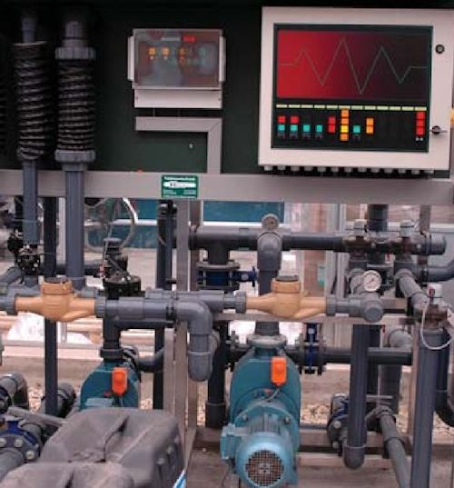

Greenhouse Irrigation
Both the quality and quantity of water are critical to the successful production of plants in a greenhouse or nursery. While considered a critical parameter, water issues are fre quently overlooked by most growers. Parameters deemed suitable for drinking water purposes are not necessarily acceptable for growing plants. Appropriate tests should be conducted prior to selecting a greenhouse or nursery site.
Water Quality
Water quality properties can be divided into three categories: physical, biological and chemical. Critical physical properties include suspended solids and temperature. Suspended solids such as soil particles are potential problems since these particulates can clog irrigation nozzles and cause abrasion of irrigation equipment. Water temperature can be an important consideration, particularly when growing foliage plants where high or low temperature water can cause leaf spotting that reduces the value of these plants.
Important biological properties include algae, microbes and disease organisms. Algae and microbes are a concern since they may cause clogging of irrigation system components.
Chemical properties are typically given the most focus when dealing with irrigation water. From the grower’s standpoint, the most critical chemical water quality parameters are soluble salts, hardness, sodium and chloride concentration and pH. In a few cases, elements such as iron, boron and fluoride are also considered critical parameters. Chemical properties, like physical and biological, may change significantly during a year, particularly as the demand increases on a ground well and the water table is lowered.
Table 1 includes general guidelines for irrigation water used in plant production. A more detailed discussion on several of these parameters is required.
pH
In general terms, pH is a measure of the hydrogen ion concentration. The pH can vary on a scale from 0-14 with a pH of 7 being neutral, less than 7 considered acid and above 7 called basic or alkaline. Irrigation water with a pH of 4 might be termed very acid and water with a pH of
8.5 very alkaline. The pH is an important param eter to know since it will influence the relative solubility of certain nutrients and can impact the solubility of certain chemicals or pesticides used in grower operations. The pH of irrigation water is not generally as critical a measurement as the pH of the media. While the term pH is often used interchangeably with alkalinity, these are two totally different parameters.
Table 1. General Guidelines for Irrigation Water Used in Plant Production
| Parameter* |
Units |
Upper Limit |
Optimum Range | |
| EC |
μmho/cm**** |
750 plugs; 1,250 greenhouse; |
0-300 | |
|
1,500 nursery |
||||
| TDS** |
ppm |
480 plugs; 800 greenhouse; 960 nursery |
0-192 | |
| (total dissolved solids) |
(1 ppm = 1 mg/l) |
|||
| pH |
– |
possibly 8.0 upper; 4.5 lower |
5.2-6.8 | |
| Alkalinity |
ppm CaCO3 |
200 (90 for foliar spotting) |
0-60 plugs | |
|
(1 meq/l CaCO3 = 50 mg/l CaCO3) |
0-100 greenhouse | |||
| 0-140 nursery | ||||
| Bicarbonate (HCO3-) |
ppm |
150 |
30-50 | |
| (EW = 61)*** |
meq/l |
2.4 |
0.5-0.8 | |
| Hardness |
ppm CaCO3 |
200 |
20-150 | |
| Na (EW = 23) |
ppm |
50 (keep <10% of total salts) |
0-30 | |
|
meq/l |
2.2 |
0-1.3 | ||
| SAR |
– |
4 greenhouse; 6 nursery |
0-3 | |
| Ca (EW = 20) |
ppm |
120 |
40-100 | |
|
meq/l |
6 |
2-5 | ||
| Mg (EW = 12) |
ppm |
50 |
5-25 | |
|
meq/l |
4.2 |
0.4-2.1 | ||
| Nitrate-N (EW = 14) |
ppm |
50 |
0-10 | |
|
meq/l |
3.6 |
0-0.7 | ||
| P |
ppm |
5 |
0-1 | |
| K (EW = 39) |
ppm |
10 |
1-10 | |
|
meq/l |
0.25 |
0.02-0.2 | ||
| Sulfate (EW = 48) |
ppm |
240 |
25-200 | |
| SO4 |
meq/l |
5 |
0.5-4.2 | |
| Fe |
ppm |
5 (<1 to avoid foliar spotting) |
1-3 | |
| Mn |
ppm |
1 |
0.2-1 | |
| B |
ppm |
2 |
0.2-0.5 | |
| Cl (EW = 35.5) |
ppm |
140 |
1-50 | |
|
meq/l |
3.9 |
0.03-1.4 | ||
| F |
ppm |
1 |
0-1 | |
| Al |
ppm |
5 |
0-5 | |
| Mo |
ppm |
0.07 |
0-0.05 | |
| Zn |
ppm |
2 |
0-0.2 | |
| Cu |
ppm |
0.2 |
0.05-0.15 | |
* Play the charge balance game. Express the concentrations of the four major cations (K, Na, Mg, Ca) and the four major anions (HCO3, Cl, SO4 and NO3) in meq/l. Add the cations up, then add the anions up. The cation total should be very close to the anion total if the analysis is correct.
** TDS can be estimated from EC. An EC of 1,000 μmho/cm equals approximately 640 ppm total dissolved solids. Also referred to as total suspended solids.
*** EW = equivalent weight of the ion.
**** 1,000 μmho/cm = 1 mmho/cm = 1 dS/m = 1 mS/cm.
Alkalinity
While pH is a measure of the hydrogen ion concentration, alkalinity is a relative measurement of the capacity of water to resist a change in pH or the ability of the water to change the pH of the growing media. You may wish to think of alkalinity as the buffering capacity of the water – how well it resists or causes a change in pH. It is not uncommon to have irrigation water with a pH of 7.5 (alkaline) but with a low alkalinity value that is quite acceptable for growing plants.
Alkalinity is a measure of the total carbonates (CO32-), bicarbonates (HCO3-) and hydroxyl ions (OH-). Alkalinity increases as the amount of dissolved carbonates and bicarbonates rises. Irrigation water with high alkalinity (e.g., 400 ppm CaCO3) will tend to raise the pH of the growing media over time and will require more acid to lower the pH of the water to an acceptable level should a grower wish to do that. Water with a high alkalinity (e.g., > 100 ppm CaCO3) will require that a grower consider using acid-type soluble fertilizers rather than calcium-based fertilizers. Acid injection is commonly used to manage water with high alkalinity.
Notice that the term alkaline (pH > 7) is entirely different from the term alkalinity (capacity to change or resist a change in pH).
Hardness
The term hardness refers to the combined concentration of Ca and Mg in the water. Hardness can be used as an indicator of alkalinity. “Hard” water, water with a high concentration of Ca and Mg, should be checked for high alkalinity. Hard water is a potential problem since the calcium and magnesium can combine with bicarbonate to form insoluble calcium and magnesium carbonate salts. These salts can impact media pH and reduce the amount of sodium available to a plant.
Total Soluble Salts
Irrigation water, particularly if the source is from groundwater, usually contains some amount of dissolved salts. Some of these dissolved salts, particularly sodium, chloride, boron, fluoride and iron, are of greater concern to growers than others. Soluble salts are a concern in that they are either directly toxic to the plant, impede the uptake of water by the roots or cause foliar spotting that lowers the overall value of the plants. Water high in soluble salts may be referred to as saline. Total soluble salts are easily measured by monitoring the electrical conductivity (EC) of the solution. Note that soluble salts may disassociate in water to form charged ions. If the ion carries a positive charge (+), it is called a cation; if it carries a negative charge (-), it is called an anion.
The most common cations of interest in water are calcium (Ca+2), magnesium (Mg+2) and sodium (Na+); the most common anions are bicarbonate (HCO3-), chloride (Cl-) and sulfate (SO4-). An electrical conductivity meter simply measures the total relative amount of either the dissolved anions or the dissolved cations. Pure water, with few or no dissolved salts, would be a poor conductor of electrons so the electrical conductivity value would be very low or approaching zero. Interestingly enough, urea when dissolved in water to make a fertilizer solution does not disassociate so it cannot be monitored adequately using an EC meter.1
Electrical conductivity measurements DO NOT indicate the relative amounts of any specific salt or ion. Additional specific tests typically run by outside laboratories must determine concentrations of specific ions.
Specific Ions
Units most frequently used when reporting concentrations of ions are ppm or mg/l; however, they are sometimes reported in units of meq/l. The units meq/l can be calculated from the ppm by dividing the ppm by the equivalent weight (EW) of the respective ion. For example, with sodium, the EW is 23 (molecular weight of 23 divided by the valence which is 1). If the concentration of sodium was 100 ppm, the concentration expressed in meq/l would be 4.3.
Na (sodium): High sodium is a concern to growers since it can contribute to salinity problems, interfere with magnesium and calcium availability in the media and cause foliar burns. Sodium and chloride problems are observed when irrigation water is run through a water softener that is using sodium chloride to “soften” or exchange the calcium and magnesium in the water. “Softened” water is generally not recommended for greenhouse or nursery irrigation purposes.
Cl (chlorine is the element; chloride is the ion, Cl-): Elevated chloride is often associated with an elevated sodium concentration. Chloride, like sodium, can be directly toxic to the plant. Water is generally not a major source for chloride problems; however, certain fertilizer salts (e.g., potassium chloride) can be.
Fe (iron): Elevated iron levels generally cause aesthetic problems on plants and greenhouse structures, but high levels can also cause an accumulation on irrigation equipment that leads to plugged emitters. Levels that cause this discoloration are generally below the levels that cause toxicities in plant tissue.
B (boron): Like sodium and chloride, boron can sometimes be found in high concentrations which are toxic to plants. High boron levels are commonly associated with alkaline soil formations in areas of low rainfall and are, therefore, frequently found in many western states. Like other nutrients, crop sensitivity to boron varies so certain species may be susceptible to damage at a concentration of 0.5 ppm while others tolerate levels up to 4 ppm. Plant age also influences susceptibility or degree of problem. Seedlings will generally be more susceptible than mature plants of the same species. Management strategies to minimize boron problems when the water source is high include eliminating boron from the fertilizer sources, increasing the leaching fraction, increasing the media pH and increasing the calcium level.
F (fluorine is the element; fluoride is the ion, F-): Several important floriculture crops including Easter lilies, freesias, spider plant (Chlorophytum), Maranta and Dracaena are known to be extremely sensitive to even low levels of fluoride in irrigation water. Fluorine is not considered an essential element for plants, but it can be a concern for greenhouse growers since it is routinely added to drinking water to prevent tooth decay. A fluoride analysis is highly recommended if the greenhouse water is provided by a city water source that is fluoridated.
Zn (zinc) or Cu (copper): Problems associated with Zn or Cu toxicities are generally not associated with water systems; however, in a few cases acid water transported through galvanized or copper pipes may result in toxic levels of these elements in the irrigation water. These elements are a concern if using an acid growing media.
Sodium Adsorption Ration or SAR
It has already been suggested that sodium concentrations need to be evaluated in terms of the amounts of calcium and magnesium because of the close potential interaction of the three nutrients. To quantify this relationship, the sodium adsorption ratio (SAR) is calculated. Generally, the higher the SAR value, the greater the potential for problems. The type of irrigation method also needs to be considered. High SAR water applied using an overhead irrigation system in a climate with low humidity (i.e., evaporates quickly) can cause leaf injury. The same water applied using surface or drip irrigation may not be a problem.
Some laboratories provide results as an “Adjusted SAR.” This value is more difficult to calculate and requires special tables and knowledge of the carbonate and bicarbonate concentrations. An adjusted SAR has the advantage in that it takes into account the tendency of high bicarbonate/carbonate water to precipitate calcium into calcium carbonate, which reduces the calcium content and increases the potential for a sodium problem.
Water Quality Testing
While certain parameters can be tested adequately by a grower, most choose to send water samples out for laboratory analyses. Those parameters that can be tested easily and inexpensively by growers in-house include pH, alkalinity and total soluble salts.
pH can be measured by a grower using an inexpensive pH meter or “pen” or by using indicator test strips. Alkalinity can be measured using test kits available from some grower supply firms or swimming pool supply companies. These test kits usually rely on adding a color indicator to the water sample and then adding acid dropwise to reach a final color that translates into a specific alkalinity value. Soluble salts are easily measured using an inexpensive electrical conductivity meter with automatic temperature compensation.
Several laboratories, including one affiliated with the University of Arkansas Division of Agriculture Cooperative Extension Service, are capable of analyzing water samples. Most laboratories will offer a flat fee for a standard package of tests (e.g., pH, EC, hardness, alkalinity, sodium, etc.), or they will offer a cafeteria plan for you to pick and choose specific tests. It is critical that you indicate you are submitting an irrigation water sample rather than a domestic drinking water sample. It is best to collect the water sample in a clean plastic bottle. Collect the specified volume after running the tap for a few minutes. It is suggested that you fill the bottle to the top to avoid any room for air. If a nitrate analysis is required, the sample should be shipped to the laboratory quickly or significant changes in concentration can occur over time. An example University of Arkansas Irrigation Water Report can be found at the end of this document.
Management Strategies
Working with water quality issues is technical in nature and may require addition of expensive equipment or chemical treatment of the water. Before developing a major water treatment system for your growing operation, you are encouraged to contact your local Cooperative Extension agent for guidance.
Scenario: Water with an alkaline pH and high alkalinity
This scenario is corrected by using the appropriate acid and usually an acid injector. Phos phoric acid is used more fre quently than sulfuric acid or nitric acid since it is considered safer; however, handling any of these concentrated acids is to be considered dangerous. Strict safety guidelines must be followed. Nitric and sulfuric acids should be considered when the alkalinity is high (> 300 ppm) since phosphoric acid might supply excessive amounts of the nutrient phosphorus. Acid injection is usually considered when the alkalinity is over 100 ppm.
Tables are available that calculate the amount of a specific acid required based on the starting pH, the amount of alkalinity, the amount of change in pH required and type of acid used. An online “Alkalinity Calculator” is available through North Carolina State University.
The amount of acid required to neutralize the alkalinity of water can also be determined from the following equation.
A x B x C =
the ounces of acid/1,000 gallons of water
to lower the pH to 6.4
A is a co-factor determined by the current or starting pH:
B is the sum of the bicarbonate and carbonate expressed in meq/l.
C is a cofactor determined by the type of acid used.
Example:
Starting pH of the water = 7.5 carbonate + bicarbonate = 3.4 meq/l using 75% phosphoric acid
0.460 x 3.4 x 10.6 = add 16.5 ounces of 75% phosphoric acid/1,000 gallons of water
Scenario: Water with a high EC
There are probably two common approaches to dealing with saline water. The first remedy is to simply blend the higher EC source with water from a lower EC source, usually a surface retention pond. The other approach involves careful management of the irrigation volume being applied. While the ideal scenario is to minimize leaching to avoid wasting fertilizer and water, increasing what is called the leaching fraction (LF) can improve the usability of high EC water. Leaching fraction is simply the volume of water leached divided by the volume of water applied and that result multiplied by 100. Here is a simple example. A general rule of thumb is that if the EC of the irrigation water is >2,000 μmho/cm, it would require a leaching fraction of 40 percent or higher (i.e., leach heavily and almost every irrigation). If the EC of your irrigation source is 1,000 μmho/cm, you can leach with a smaller volume or percentage (e.g., 15 percent).
A grower faced with high EC water would also not want to let pots dry out. Simply stated, the concentration of salts will increase around roots as the media dries out. Growers would also want to use fertilizer products with a lower salt index if possible. The final resolution is expensive and rarely used. Growers can install expensive reverse osmosis or deionization equipment to reduce the soluble salt concentration in their water source.<
Scenario: Water with high concentration of suspended solids
Filtration is the standard method for removing suspended solids. You may wish to work with an irrigation supplier or engineer so the appropriate equipment is selected and positioned within your irrigation system.
Water Quantity Nurseries
A general rule of thumb used by irrigation designers suggests that a minimum of 1 acre-inch (approximately 27,000 gallons) of water capacity is required per acre of nursery stock per day of irrigation. Assuming a grower might irrigate for 180 days during a year in Arkansas, it would require 4.86 million gallons of water per acre of container stock per year. Another common recommendation suggests an estimated annual use of 13 acre-feet of water per acre of container nursery stock.
Greenhouses
Greenhouse operations also use an impressive amount of water. One rule of thumb is a requirement for 1-2 quarts per square foot of growing area per day. One acre of growing space would require approximately 11,000-22,000 gallons of water per day. This does not include water requirements for evaporative cooling systems or other non-crop uses..
Acknowledgment is given to:
DR. GERALD L. KLINGAMAN, former Extension horticulture specialist – ornamentals, as an original co-author of this fact sheet.
DR. JAMES ROBBINS is professor -ornamentals, Horticulture, Department, University of Arkansas Division of Agriculture, Little Rock.